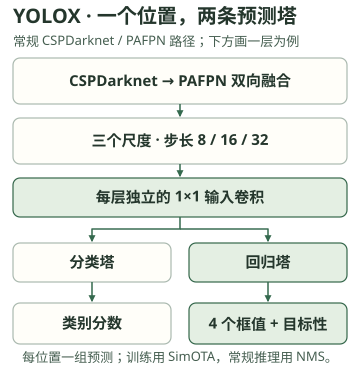

01 / 标注与预测之间，还缺少对应关系
知道目标在哪里，
还没有确定哪个预测来学习它。
图像分类中，输出向量的类别顺序已经规定，类别标签能直接变成对应目标。目标检测还要处理位置与数量：图中可能只有两只猫，网络却输出几千个候选框。仅写出一个框回归损失，还没有回答每个预测应该与哪个真实框比较。
样本分配先决定哪些预测负责哪些目标，再构造各项损失需要的监督。匹配是其中建立预测与真实标注（Ground Truth，GT）对应关系的一步；不少论文会交替使用这两个词。
分配负责监督对象
确定正样本、对应 GT，以及未选预测作为背景还是忽略。它直接关联预测与标注，不直接把网络参数分给某个目标。
优化负责参数调整
损失建立输出要求，反向传播计算参数梯度，优化器完成更新。多个预测通常共享参数，不需要人为指定哪个卷积核专门学习哪只猫。
目标检测中的“正样本”是被选中承担前景监督的预测单元。一个真实框在特征坐标中可以覆盖许多位置，但覆盖位置不自动全部成为正样本；被选中的每个正预测都以完整真实框作为回归目标。
02 / 先把特征变成可以比较的预测
80×80 是位置布局，
不是一个框的大小。

特征融合网络（Neck）的输出可写作 [F, H, W]，暂时省略训练批次维度。H、W 分别表示特征图高度与宽度，F 表示通道数，因此每层有 H×W 个空间位置。YOLOX 的解耦头先调整通道，再让分类、回归分支各自处理特征；最终预测卷积把每个位置转换成规定数量的输出。下图中 F′ 为调整后的通道数，K 为类别数。
一个尺度的检测头
融合特征 → 入口 1×1 卷积调整通道 → 分类 / 回归分支
分类分支
两个 3×3 卷积 → 1×1 预测卷积
[F′, H, W] → [K, H, W]
回归分支
两个 3×3 卷积 → 两个 1×1 预测卷积
[F′, H, W] → [4, H, W] 与 [1, H, W]
4 个输出表示框参数，1 个表示目标性评分（objectness），K 个表示未归一化的类别得分（logits）。训练时不会先取一个类别编号再计算分类损失。最终的 1×1 预测卷积是可训练的输出映射，不只是重排数组；步长为 1 时保留 H、W，改变的是通道，通道数并非总会减少。
多尺度预测的位置数量与张量形状
输入固定为 640×640，示例类别数 K = 2。切换只改变当前查看的尺度，不表示模型停用另外两层。张量中的 B 表示每个训练批次的图像数量。
80×80 层：[7, 80, 80] → [6400, 7]。每个位置仍是一组独立候选。
80×80 → 6400 个候选 40×40 → 1600 个候选 20×20 → 400 个候选 汇总 [8400, 7]；加入 batch 后为 [B, 8400, 7]
K = 80 时，每个候选有 85 个输出。类别数 80 与空间尺寸 80×80 含义不同。展开操作只重排位置，没有把一张特征图压缩成一个框。
原始框参数还需要解码
cx = (tx + gx) · s，cy = (ty + gy) · s
w = exp(tw) · s，h = exp(th) · s
固定网格索引 (10, 15)，预测的原始框参数 (t_x, t_y, t_w, t_h) 为 (0.5, 0.5, ln5, ln3)。g 是网格索引，s 是步长；解码后得到中心坐标 (c_x, c_y) 与宽高 (w, h)。下列坐标属于 640×640 的模型输入图。
步长 8 → 中心 (84, 124)，宽高 (40, 24)，角点 (64, 112, 104, 136)。
步长为 8，不限制该位置只能预测 8×8 的框。结构和解码确保输出具有明确格式，正确位置与大小仍需通过训练学习。网格参考位置也不等于一个框只能描述所在的小网格。
GT 必须随图像的缩放、裁剪、填充一起变换。预测与目标要统一坐标单位和框格式：例如都用模型输入图像素坐标下的中心宽高，或都转换为角点坐标。不能拿原图坐标直接与未解码的网格数值混算。
结构与解码：YOLOXHead：预测卷积、get_output_and_grid。检测头使用经过选择与融合的多尺度特征，并非主干特征提取网络（Backbone）每一次下采样的全部中间输出。
03 / 分配结果成为具体的索引、目标和掩码
分配改变的，是损失算在哪里，
以及拿什么作为答案。
解码后有 N 个预测框，形状为 [N, 4]。分配选出 P 个正预测，并给出它们各自对应的 GT 索引，于是可以取出 [P, 4] 的预测和同形状的目标框。多个预测学习同一目标时，会重复取用同一个完整真实框。
保持预测不变，只改变本轮监督责任
本演示包含 4 个候选框，编号 1—4 仅用于区分示例预测。真实标注为猫，角点框 [100, 80, 140, 140]。候选框 1 为 [90, 80, 135, 140]，候选框 2 为 [102, 81, 141, 140]。
手动指定一个或两个正预测，仅展示分配结果如何构造监督目标，不运行完整分配算法或模型训练。候选框 3、4 的坐标省略，均未被选中。
窄屏可左右滑动表格，查看损失的完整对应。
| 候选框编号 | 目标性分数 p_obj | 目标性监督值 | 目标性 BCE | 框监督 | 类别目标 |
|---|
positive_mask = [False, True, False, False] obj_target = [0, 1, 0, 0] box_targets = [[100, 80, 140, 140]]
选中的预测学习完整框与类别；其余预测通过 objectness 接受背景监督。
目标性 BCE 显示每个候选未经加权和归一化的单项值。类别软目标为对应类别的独热编码（one-hot）乘以匹配框的交并比（IoU）；本例候选框 1 的 IoU = 0.70，候选框 2 约为 0.912。演示数值不用于推算训练效果或平均精度（AP）。伪代码中的 positive 表示正样本掩码，matched_gt 表示匹配的标注索引，quality 表示匹配质量。
# 简化伪代码，省略 batch、坐标变换、归一化等细节
with no_grad():
positive, matched_gt, quality = assign(predictions, GT)
box_targets = GT.boxes[matched_gt]
cls_targets = one_hot(GT.classes[matched_gt]) * quality[:, None]
obj_targets = positive.float()
L_box = box_loss(pred_boxes[positive], box_targets)
L_cls = cls_loss(pred_cls[positive], cls_targets)
L_obj = obj_loss(pred_obj, obj_targets)
loss = weighted_normalized_sum(L_box, L_cls, L_obj)
loss.backward()
optimizer.step()
YOLOX 的框和类别损失主要对正样本计算，objectness 对全部候选计算。负预测的框不需要被回归成零。没有框回归监督，也不代表这个位置涉及的共享参数全部停止更新：objectness 和其他预测的损失仍可能影响它们。
匹配代价、训练损失与反向传播是什么关系？
匹配代价用于比较哪个预测更适合负责某个 GT；训练损失衡量已经分配好责任的预测与监督目标的误差。两处可以使用相似的分类、定位误差，但权重和使用范围不必相同。
YOLOX 分配使用 @torch.no_grad()。这让本轮的选取和监督目标不参与求导，不会切断用于计算训练损失的原始预测。利用正样本掩码索引原始预测，仍可把梯度传回生成这些预测的网络。
例如，objectness 的 BCE 对未经过 sigmoid 的输出 z 的梯度为 p−y，其中 p 是经过 sigmoid 的分数，y 是监督目标值，暂不计权重与归一化。本例候选框 2 的 p = 0.55：若目标为 1，梯度为 −0.45，鼓励分数提高；候选框 1 的 p = 0.80 若目标为 0，梯度为 +0.80，鼓励分数降低。实际共享参数更新是多项梯度的组合，不保证每项预测在一次更新后都严格改善。
反向传播沿检测头、特征融合网络和主干网络的可求导路径计算梯度，优化器才执行参数更新。设置输出损失不等于只训练最后一层，也不需要人为指定哪个神经元学习哪个物体。
对应实现：YOLOX 目标构造、损失与 no_grad；反向传播见 PyTorch 自动求导说明。
04 / 规则、执行频率与结果变化分开看
每个批次构造监督，
不等于所有分配都是动态的。
在本文列举的标准训练实现中，当前训练批次（batch）的预测与标注进入目标构造。简化最优传输分配（SimOTA）与任务对齐学习（TAL）都需要当前预测，因此每次训练前向产生预测后，都会重新进行分配；同一次损失的反向传播沿用已经确定的分配，不会边反传边重选。
batch 是计算组织单位，预测—GT 的匹配以单张输入图片为边界。图片 1 的猫只匹配图片 1 的预测，不与图片 2 的狗竞争预测位置。代码可以逐图循环，也可以带 batch 维度并行计算。
几何规则为主的分配
正样本选择主要依据 GT 中心、尺寸与固定先验。相同几何输入下，主正样本选择不会仅因网络参数更新而改变；但增强、缩放或裁剪可能改变几何输入。
预测质量感知的分配
正样本选择参考当前预测。同一张图片再次进入训练时，被选为正样本的候选可能改变。依据预测质量选择候选、动态确定正样本数量、按训练阶段切换分配器，是不同的设计维度。
先验框聚类与训练分配不是同一次操作
先验框（Anchor）聚类从数据集框宽高中确定形状模板。模板会重复用于大量图片与网格位置，没有提前决定当前图片中每个目标对应的完整预测索引。YOLOv3 仍在训练时由 GT 中心确定网格，并比较先验形状选出主正预测。
“静态”通常描述主正样本选择依据，不是只执行一次。YOLOv3 对部分未选预测的忽略判断仍参考当前预测 IoU；不能说其全部监督处理都与预测无关。动态分配重新计算，也不意味着结果每次必定改变。
梯度累积与正常推理怎样理解？
若几个微批次累积梯度后才更新参数，每次用于计算损失的训练前向仍构造自己的分配，不必等到 optimizer.step 才做一次。通常也不会预先把整份数据集的动态分配结果固定下来。
正常检测推理没有 GT，不执行这种训练分配。评估时为计算指标而把检测结果匹配 GT，是另一个用途，不等于训练时的样本分配。
批次执行见 YOLOX train_one_iter；原版先验与责任分配见 Darknet yolo_layer。
05 / 从候选空间约束，到当前预测质量
位置合适的候选，
未必最适合承担监督。
几何规则易于实现，但未充分利用模型已经学到的能力：有的候选位置合适，类别却分不清；另一个候选可能已能同时给出更好的分类和定位。不同 GT 的候选质量不同，固定选同样数量的正样本也未必合适。
SimOTA：先确定候选范围，再估计数量、选择正样本
- 几何先验缩小候选。
优先考虑目标中心附近的位置，减少明显无关候选；候选可以来自不同尺度。具体半径与筛选写法以所用代码版本为准。
- 计算预测—GT 代价。
综合分类与定位误差，并对不满足几何关系的配对加大惩罚。代价越小越合适，不只是取最高类别分数或最高 IoU。
- 动态 k 决定数量，最低代价确定正样本。
官方实现对每个 GT 取至多 10 个最高 IoU，求和取整数且至少为 1，然后选 k 个最低代价预测。两次选择的职责不同。
- 处理争用，生成监督。
一个预测若被多个 GT 选中，按较低代价确定归属。冲突后不保证每个 GT 仍恰好保留 k 个，再据最终结果构造损失。
为什么称为“简化 OTA”，以及它的边界
最优传输分配（OTA）将分配建模为全局最优传输问题，需要迭代求解。SimOTA 用动态 Top-k 近似分配，减少求解器开销，不是精确求出完整最优传输的全局最优解。
IoU 合计为 3.7 时，初选 k = 3；这是取整规则的示意，不代表本页四候选损失演示运行出了这个结果。质量感知仍依赖当前预测，中心先验、权重和超参数也会影响分配。
标准 YOLOX 保留一对多训练与非极大值抑制（NMS）。论文额外实验过一对一、停止梯度的可选端到端方案，但没有纳入最终标准模型。Anchor-free 改框表达，解耦头改任务特征，SimOTA 改监督分配，三者不能混为一个创新。
TAL：让分类与定位的优先候选更一致
分类分数高的候选不一定定位准确；定位好也不一定分类可靠。TOOD 检测器提出的任务对齐学习把两项共同纳入评价，并用质量相关的目标组织监督。YOLOv8 等采用了其分配思想，但不等于照搬 TOOD 的全部网络与损失设计。
m 为匹配度量；s 表示候选参考点是否满足空间先验；p 为 GT 对应类别分数；q 为定位质量；α、β 控制分类与定位项的相对影响。YOLOv8 v8.0.100 实现的 q 使用截断为非负的 CIoU，即在 IoU 基础上考虑中心距离与长宽比的度量，候选参考点需位于 GT 内。
上述 YOLOv8 实现按对齐度量选配置的 Top-k（度量最高的 k 个候选），再做几何筛选、冲突处理和软目标构造。k = 10 不保证每个 GT 最后都有 10 个正样本。被选中的候选随预测变化，但正样本数量并不采用 SimOTA 的 IoU 求和估计规则；冲突处理也采用该实现的重叠质量规则，而非 SimOTA 的最低代价规则。
ATSS、OTA 与 TAL 在这条主线上各自补了什么？
自适应训练样本选择（ATSS）从各层靠近 GT 中心的候选出发，用候选先验与 GT 的 IoU 统计得到自适应阈值，再结合中心约束选正样本。自适应阈值不等于按当前类别预测动态挑选；它提供了从固定阈值走向数据自适应选择的思路。
OTA 从多个 GT 共同竞争候选的全局角度建模。SimOTA 保留质量感知、中心先验、动态数量等想法并简化求解。TAL 则强调分类与定位的任务对齐。这些方法的关注点有重叠，不能用一个名称概括全部差别。
06 / 按改变的职责比较，而不把版本号排成继承链
候选、质量、数量与多头协作，
是可以分别改变的设计。
先看四个问题：哪些候选有资格、怎样衡量匹配程度、一个目标选几个正样本、多个头的监督怎样协调。下列覆盖原始 YOLOv1—v5、YOLOX、v6—v10，以及常见后续分支中的代表实现，不穷举全部第三方变体。
YOLOv1 已参考当前预测 IoU 选择负责者；v2/v3 的主正样本选择转向先验形状。演变并非“所有早期方法静态，所有后期方法动态”，也不是后一版本继承此前全部优点。
YOLOv1：在目标中心所在网格内，按当前 IoU 选负责者
一个网格预测多个框，需要确定哪个框承担目标。原版先由目标中心决定负责网格，再在该网格的框预测中选择当前与 GT IoU 最高的负责者。它已经具有预测感知的选择，但范围局限在指定网格内。
原版类别向量由网格共享，不是每个框都各自带一套类别输出。固定网格责任对同网格多目标等情况存在限制；一个主负责者也没有消除重复预测与 NMS。不能把本页 YOLOX 的逐位置输出格式原样套给 v1。
YOLOv2：先验形状帮助框回归，聚类不代替训练分配
为改善框预测的起点与表达，v2 使用聚类得到的尺寸先验，并为每个 anchor 输出框、objectness 和类别。在所核对配置的 bias_match=1 下，GT 中心决定网格，GT 宽高与先验形状的匹配决定负责的 anchor。
这是训练中的具体责任选择，聚类只提前给出形状模板。代码仍有基于当前预测的忽略处理，另有早期框预热逻辑；不能把整个训练过程等同于“一次聚类后全部固定”。
YOLOv3：跨三个尺度选最佳先验，但通常只有一个主正预测
三层预测共享一组分配到不同层的尺寸先验。对每个 GT，比较所有先验的形状 IoU，选最佳者，再由 GT 中心找到其所在层的网格，确定主正预测。形状比较不是比较当前预测框谁最准。
同一几何输入下，主责任通常不会仅因参数训练而改变。但部分未选中且与 GT 高重叠的预测会被忽略负 objectness 监督，所以也不能说所有未选位置都被压低。这种一个主正样本的安排不等于 v10 的 NMS-free 输出训练。
YOLOv4：不只最佳先验，额外合适先验也可获得正监督
若只给最佳先验正监督，其他形状也合适的候选机会较少。所核对配置设 iou_thresh=0.213，实现除最佳先验外，还允许形状重叠超过阈值的额外先验负责同一 GT，形成多个正样本机会。
这里的额外筛选比较先验形状与 GT，不是按当前分类质量排名。这个阈值也不是 NMS 阈值或忽略负样本的 ignore_thresh；它们服务于不同环节。不得将 main 的所有新增选项都归为最初论文贡献。
YOLOv5：宽高比筛选多个先验，再按条件扩展相邻网格
为增加正监督机会并减小单一网格归属的限制，先按 GT 与先验框的宽高比阈值筛选合适先验，再根据中心位置扩展相邻网格。扩展是有条件的，不是每个目标固定选全部邻格。
选正样本主要依据几何规则；正样本 objectness 目标又可由当前框的 IoU 质量赋值。正样本集合是否随预测动态变化，与监督目标值是否含预测质量，需要分开判断。
YOLOX：Anchor-free 减少表达设计，SimOTA 动态选择正样本及其数量
Anchor-free 省去预设宽高模板，每个位置提供一个候选；解耦头让分类与回归分别处理特征。它们都没有自动回答哪些位置应当成为正样本，仍需分配。
论文先展示中心单正样本、中心多正样本，再引入 SimOTA；最终标准方案利用当前分类与定位质量动态确定正样本及其数量。它仍产生密集候选并保留 NMS，不是 Anchor-free 就自动免去 NMS。完整机制见上节。
YOLOv6：可以先用 ATSS 预热，再切换预测感知的 TAL
训练初期预测尚不可靠，直接依赖预测质量可能不利于建立监督。所核对实现使用 ATSS 预热，随后使用 TaskAlignedAssigner；默认预热轮数可配置，代码默认值为 4。
这强调的是训练阶段与分配策略的配合：预热与正式阶段的正样本选择依据不同，不是“训练前只算一次”。正式分配 topk、α、β 的配置也不同于本文列出的 YOLOv8，不能看到 TAL 名称就认为全部细节一致。
YOLOv7：动态匹配之外，还要协调主头和辅助头的监督
所核对 OTA 风格实现先构建候选，再根据分类、定位代价和动态 k 匹配，解决仅靠几何规则不够的问题。这个动态 Top-k 实现不等于每次运行完整最优传输求解器。
有辅助头后，两个头独立生成标签还可能偏好不同监督。论文提出主头引导标签生成，粗到细方案给辅助头更宽松的正监督，让主头接受更精细的目标。它关注多头协作，但没有把这两头设计成 v10 的“一对多训练 + 一对一部署”。
YOLOv8：TAL 同时评价分类与定位，并形成质量软目标
先要求参考点位于 GT 内，再按分类与定位的对齐度量挑选候选。该损失配置 Top-k = 10、α = 0.5、β = 6，实际正样本还受几何与多 GT 冲突影响。最终类别目标包含质量信息。
它是基于预测质量的动态正样本选择，但没有用 SimOTA 的 IoU 求和规则估计 k。TAL 源于 TOOD，不是 v8 首创；去掉独立 objectness 后，未匹配位置由全零类别目标接受背景监督。
YOLOv9：可编程梯度信息（PGI）改善训练梯度，不应被写成另一个全新分配器
双分支训练仍需将各分支预测与 GT 对应。所核对的 ComputeLoss 分别对两组预测使用 TAL，默认配置 topk = 10、α = 0.5、β = 6；两条分支都不是 v10 那种只选一个正样本的部署头。
PGI 关注训练中信息与梯度的组织。出现辅助分支，不代表分配器必须全新，也不直接等于 NMS-free。其他损失入口可采用不同的标签共享方式，应按实际调用路径核对。
YOLOv10：把监督充分性与最终唯一输出需求分给两条路径
一对多提供较丰富的正监督，却鼓励多个预测学习同一目标；只用一对一又可能使正监督过于稀疏。v10 训练两套预测头，分别采用一对多与一对一分配，再通过一致匹配度量协调优先候选。
官方实现一对一头读取 detach 后的共享特征：其损失更新自身头参数，不直接回传 Backbone / Neck；共享特征主要接受一对多分支监督。导出部署保留一对一头。双重分配、一致度量和梯度路径要合起来理解。
YOLO11 / YOLOv12 / YOLOv13：网络有更新，不代表分配器也换代
上述版本的普通检测路径进入 v8DetectionLoss，并采用 TaskAlignedAssigner。网络特征与结构的改进，可以发生在同一类监督分配之上；不能把一个模型整体的收益都归为新的分配方法。
代码同时可能提供端到端损失类，但“文件里存在某个类”不等于该模型正在调用它。这里结合末端 Detect 配置与 init_criterion 路径判断，端到端或其他任务配置需另行核对，不将它们一概归为相同训练。
损失与入口：YOLO11 所用版本损失 / 入口；v12 损失 / 入口；v13 损失 / 入口。配置：yolo11.yaml、yolov12.yaml、yolov13.yaml。
YOLO26：小目标感知标签分配（STAL）补充候选范围，再保留真实范围监督
当极小真实框内没有任何特征参考点时，TAL 的几何筛选可能让它拿不到正候选。STAL 只在候选筛选阶段扩大过小维度的范围；匹配质量、目标赋值和回归仍使用原始 GT 框。
它解决候选覆盖，不是修改真实标注大小，也不保证冲突后的分配、分类和最终检出全部成功。双头训练还有渐进损失，将优化重点逐步转向一对一推理头；这是损失权重安排，与 STAL 的候选筛选属于不同职责。移除分布焦点损失（DFL）改变框的输出表示，优化器变化改参数更新，也不应统称为分配改进。
比较创新时，先限定论文、代码版本、模型配置和训练入口，再看候选范围、匹配度量、数量及多头协调。几何分配不等于无用，动态分配也不保证处处更好；结论需要控制其他变量的实验，而不能仅比较采用不同结构与训练配置的完整模型的最终 AP。
07 / 分配、输出表示与损失需要共同对应
独立 objectness 并非 YOLOX 独有，
没有它也仍需监督背景。
本页数值演示采用 YOLOX 的组织方式，不代表其他版本都不包含独立 objectness。输出通道、监督目标、损失公式与参与位置需要逐项对应，不能只看总损失名字。
窄屏可左右滑动下表。以下为代表实现，默认轴对齐检测；单类别、可选 DFL 或辅助分支等配置存在差别。
| 代表方案 | 损失大体组成 | 背景与边界 |
|---|---|---|
| YOLOv3 / v5 / v7 / YOLOX | 框回归 + 独立 objectness + 类别项；具体公式、软目标与权重不同。 | 背景主要由 objectness 监督。v3 有忽略逻辑；v5 可用 IoU 质量作为正 objectness 目标；YOLOX 本页示例的类别和框损失针对正样本。YOLOv3 的框回归公式与后续版本并不完全相同。 |
| YOLOv6 所列实现 | 质量感知分类（Varifocal Loss）+ IoU 回归 + 可选 DFL。 | 没有独立 objectness 输出；分类项也承担背景区分，细节以 use_dfl 等配置为准。 |
| YOLOv8 / v9 及上述 TAL 普通检测分支 | 分类 + 框回归 + DFL。 | 未匹配位置的全部类别目标为零，由分类项抑制前景分数；框与 DFL 主要对正样本计算，不额外添加一个背景类别来替代全部细节。 |
| YOLOv10 | 两头分别计算分类、框回归、DFL，再合成训练损失。 | 两头有各自分配与参数。它不是同一组预测同时接受两份相反标签，部署也不需要融合两头。 |
| YOLO26 论文方案 | 移除 DFL，采用直接框回归及相应 IoU / L1 监督；双头目标随训练进度重加权。 | STAL 改候选资格，渐进损失改两头优化重点，直接回归改表示；这些职责分开评价。 |
DFL 相关检测头常先输出四组离散距离分布，即每位置 4R 个回归 logits，R 为每组分布的离散取值数量，再解码成四个距离或框坐标。它与 YOLOX 直接输出四个回归参数不同，但都要形成可与 GT 对齐的框。原始输出通道数与最终框的四坐标，不一定相同。
08 / 回到要解释的改进
理解监督责任后，
才能看清双重分配为何必要。
- 原方案为什么需要 NMS？
密集候选可能对同一目标产生多个高分框；一对多监督又允许多个预测共同学习它。NMS 在推理后抑制重复，但带来后处理开销与阈值取舍。重复不只来自跨尺度。
- 为什么不能只把正样本减少为一个？
一对一为减少重复提供监督方向，但正监督变稀疏，可能影响训练。YOLOv3 为每个目标选择一个主正预测，也未自动消除重复输出，单纯关闭旧模型 NMS 更不能替代训练设计。
- 双重分配与一致度量分别补什么？
两个头分担丰富监督和一对一输出；一致度量协调优先候选。独立头参数与 detach 决定梯度真实走向，部署仅保留所需分支。它们共同形成设计，不是换一个 Top-k 数字就完成全部改进。
样本分配决定监督责任，损失将责任变成梯度，训练与推理组织决定这些能力如何用于输出。按这条关系评价 YOLOv10，才能区分分配、特征结构和后处理各自的收益。
继续：YOLOv10 的一对一取舍、双重分配与一致度量 →09 / 区分原论文、指定实现与说明性演示
来源与适用范围
正文各段已链接直接依据。下列为关键入口；所有 main / master 链接仅代表 2026-11-03 核对的实现，后续可能变化。固定版本使用明确标签；没有将全部历史版本或其他任务配置视为相同。
- 原始责任分配：YOLOv1、YOLO9000 / v2、YOLOv3；v4/v5 的具体规则以各自配置和代码为准。
- 分配方法原始工作：ATSS §4.1、OTA、YOLOX / SimOTA、TOOD / TAL。
- 多分支监督：YOLOv7 §4.2、YOLOv9 PGI、YOLOv10 §3.1。
- 后续改动：YOLO26 STAL；YOLO11/v12/v13 使用的损失与调用入口见对应小节，不据模型命名推断新分配器。
- 自动求导：PyTorch 官方说明。分配掩码固定于本次反向，原预测仍保留用于训练损失的计算图。
- 本地原文：YOLOv10 英文原文；YOLO26 英文原文。
交互只做张量形状、坐标解码与给定掩码下的目标／单项损失计算。它不运行完整分配器、反向传播或真实模型训练，也不构造未经实验验证的精度、速度结论。